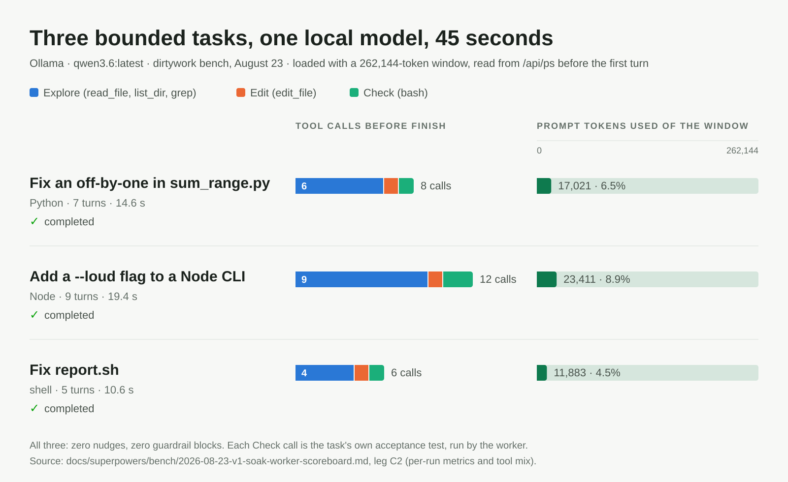

Essay · 2026-08-26
Ollama Puts a Local Model Behind Claude Desktop
A response to Ollama's Claude Desktop announcement of August 25.
Ollama's announcement is three steps long. Open Ollama and select Claude. Turn Claude on and Ollama will configure the "third-party gateway" for you. You are all set. Claude Desktop keeps its window, its history and its habits; the model answering behind it is whatever you picked in Ollama — an open model on your machine, or one on Ollama's cloud. Turn Claude off in Ollama and your previous setup comes back.
Be precise about what got local: the app, not the model. Anthropic's weights are not on your laptop. What's on your laptop is a familiar front door with a different tenant behind it.
I like this. Twelve days ago, surveying the neighborhood before dirtywork had its name, I wrote that the ecosystem's big bet is replacement — Ollama and LM Studio shipping Anthropic-compatible endpoints so Claude Code could run on a local model. Yesterday Ollama raised that bet from the terminal to the desktop. It's exactly the plumbing that makes local models less of a special project. It also sharpens the question dirtywork exists to answer:
A local model can now sit inside a familiar agent. What happens when we give it real work?
That's where the gateway ends and the harness starts.
The backend is not the workflow
Ollama solved a model-access problem. dirtywork is about a different one: what a model is allowed to do to a repository, and how you'd know afterward.
| Layer | The question | Ollama's gateway | dirtywork |
|---|---|---|---|
| Model | Which model answers? | Any model in Ollama, local or cloud | The one you name — and the context window it is actually loaded with, which dirtywork asks Ollama's /api/ps for, because a pulled model and a loaded model are not the same thing |
| Interface | How does it act? | Through Claude Desktop | Through eleven named tools in a bounded loop |
| Authority | What may it touch? | Whatever the surrounding app allows | A disposable git worktree inside a Docker container with --network none, and nothing else |
| Evidence | How do we know what happened? | The reply | One JSON object on stdout, a run.json, a JSONL transcript, and a diff a person reads |
Four decisions. One button can make them feel like one.
"Local" can mean inference happens on the machine. It can mean prompts never leave it. It can mean the weights are open and yours to keep. All useful. None of them answers the operational question: what can this model do to my repo?
A local model can be handed too much authority. A private one can still make a bad change. A free one can still cost an afternoon if it edits half the project and leaves no account of why — which is why dirtywork runs verdict takes a --review-seconds argument; review time is a cost the record keeps. The model being on your computer is not the same thing as the workflow being under control.
What the harness adds
dirtywork has had --provider ollama since 0.10. The adapter is not the interesting part. The run around the model is.
A frontier model writes the brief. The local worker gets a bounded task, explores the repo, edits files, runs the check it was told to run, and produces a candidate change in an isolated worktree — Docker by default, no network. Nothing merges itself. The operator gets the diff and the transcript, not a request to take the model's word for it.
Here is what that looked like on this box on August 23. One leg of the soak was Ollama, qwen3.6:latest, three bench tasks: three completed, five to nine turns each, each under a minute, 12k–23k prompt tokens a run. Before any of that, the /api/ps probe reported the model loaded with a 262,144-token window, so the harness sized the run to what Ollama actually had rather than what the model card promised. Across the soak, --verify — the check that can fail — fired in every one of the eight runs that carried it.

Two things I have not proven, so I'll say so. Parallel tool calls are unverified on Ollama. And Ollama's model list reports what has been pulled, not what is loaded, so an unloaded model passes preflight and then runs with whatever num_ctx Ollama picks for it. That second one is this post in miniature: "local" told the harness nothing about what the model was about to do. Asking did.
The local model doesn't have to win
The tempting comparison is "is it as good as Claude?" Wrong question. The one that matters is whether it's good enough for this task: add tests for these functions, update this section, apply this mechanical migration, find out why this one check fails, make the smallest change that satisfies this requirement. Those jobs have a smaller reasoning surface than "understand the system and redesign it", and they have something a local worker needs more: a reviewable definition of done.
The frontier model still decomposes the work, picks the boundary, spots the ambiguity, reviews the result, and decides whether the worker goes again or the task has crossed into frontier territory. You Don't Need a Chainsaw argues that split; I won't re-argue it here.
What happens next
The good news in Ollama's announcement isn't that another client can use local models. It's that the model is becoming a replaceable part. Once it is, the product decisions move up a layer: who assigns which model which task, what context it gets, whether it writes to the real checkout or a disposable branch, whether it has network, and what happens when it says "done" without doing the work.
That last one is not hypothetical. A worker told me it was done six times without changing a file — verify was green each time because it had been green the run before — and the harness agreed with it every time. Nothing Changed is that story; since 0.11 those runs end unchanged instead of completed.
None of this argues against local models. It's what makes them usable. A narrow brief. Only the tools it needs. Files somewhere disposable. A check that can fail. Keep the diff, keep the transcript, and let a person or a stronger model decide what survives. The smaller the task and the clearer the evidence, the less the worker's model name matters. The workflow is doing reliability work that people keep trying to push into the model alone.
Same front door, different tenant
Ollama is making it normal to bring an open model into the tools people already use, and the Claude Desktop integration is the clearest example yet. dirtywork starts at the next question. Once the model is interchangeable, the workflow has to say what the model is for — and it has to be able to show its work when the model claims to have done its own.
Ollama put a local model behind Claude's front door. What it's allowed to touch once it's inside is still the harness's job.
Drafted with ChatGPT from my notes on Ollama's announcement; fact-checked against the announcement and dirtywork's build records, and reviewed, with Claude (Fable 5); edited by me.